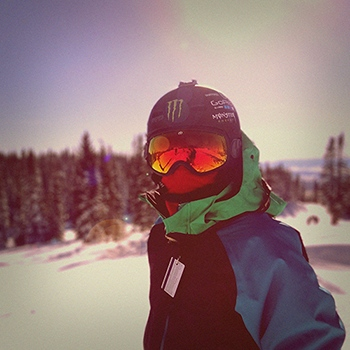

Past
I attended Barker College, located on the north shore for the majority of my schooling. I started going there in Year 3 in 2004, all the way up to Year 12 in 2013.
I completed the following subjects in Year 12 for my HSC:
| Subject | Units |
|---|---|
| English | 2 |
| Maths | 2 |
| Geography | 2 |
| Design and Technology | 2 |
| Software Design and Development | 2 |
| Information Processes Technology | 2 |
Doing Software Design and Development in Year 10 got me really passionate for programming and computing in general.
I have worked casually in the Barker College IT Department, doing various tasks as an assistant IT technician. One of the larger roles I have had to do was setting up and deploying roughly 300 iPads to primary school children. This required a large amount of steps and processes to ensure that they were set up properly.
In my downtime I enjoy programming and playing video games. I am passionate for skiing as well, the following image was taken of me last year in Colorado.
